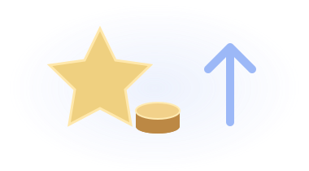
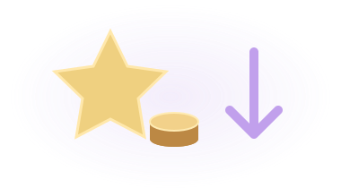

m
p
Mario Pourty
← Accueil
Jeu de plateau
1
Map
2
Mode de jeu
3
Tours
4
Mini-jeux
5
Divers
6
Récapitulatif
Sélection de la map
Map provisoire
Mode de jeu

NORMAL
Le plus d’étoiles gagne. Les AC départagent les égalités.

INVERSÉ
Le moins d’étoiles gagne. En cas d’égalité, le moins d’AC. Les étoiles sont achetées automatiquement si tu peux les payer.
ÉQUIPES
Partagez vos AC, vos étoiles et vos objets.
Nombre de tours
Tours
−
+
5 tours
30 tours
≈
30
min
Estimation provisoire
Mini-jeux
Tout sélectionner
Tout désélectionner
Divers
Utiliser les paramètres de base ?
Oui
Non
Activer les étoiles bonus
Quelles catégories ?
Combien d’étoiles bonus ?
Block caché
Nombre de blocks cachés
Mini-jeux pièces ×2
Autoriser la vente au shop
Multiplicateur du shop
×
Dés de déplacement
Places d’inventaire
Monnaie de départ (AC)
Étoiles de départ
Prix de l’étoile (AC)
Sauvegarder les paramètres de base de la map
Récapitulatif
← Retour
1 / 6
Confirmer la map →
Active JavaScript pour configurer la partie.